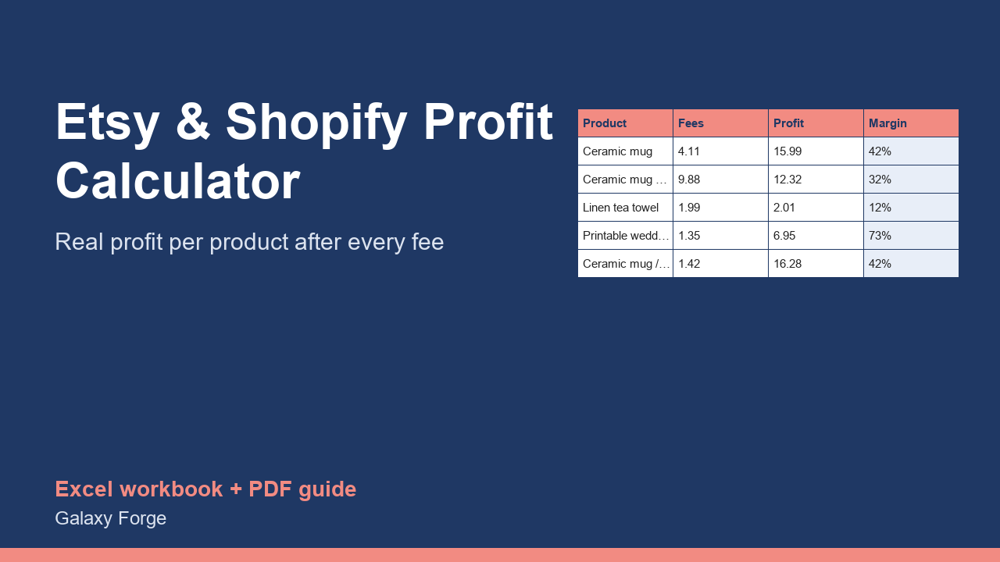

The real profit on every product after platform fees, payment processing, Offsite Ads, shipping, packaging and ad spend, plus the price you need for the margin you want.
Most small sellers know their price and their material cost. Fewer know their profit, because the fees are percentages of different things and arrive in separate lines: a listing fee, a transaction fee on price plus shipping, payment processing, an Offsite Ads fee on some orders, and then shipping labels, packaging and advertising.
This calculator puts all of it on one row per product, so you see the real profit and margin of each item, which products lose money, and the minimum price and target-margin price for each one.
Etsy and Shopify fees are on a Fees sheet you can update when rates change, so the workbook stays correct.
1) Fees: check the rates against the platforms' current fee pages, and set your target margin. 2) Products: one row per product; choose the platform (Etsy or Shopify), then enter the price, shipping you charge, any discount, your item cost, packaging, the shipping label you pay, and your average ad cost per sale. For Etsy, mark Yes if the order came through an Offsite Ad. 3) Read Profit, Margin and Status: LOSS and LOW MARGIN items need a new price or lower costs. 4) Use Break-even price and Price for target margin to set new prices.
Price: $12, one-time. Download: etsy_shopify_product_profit_calculator.xlsx (Fees, Products, Summary) and this guide. Works in Excel 2016 or later, Excel for Mac and Excel on the web; opens in Google Sheets and LibreOffice.
New product, listed 2026-10-23: no sales or reviews yet. Example figures in the workbook are illustrative.
Fee rates are the published US rates checked on 2026-10-23 (Etsy: 0.20 listing, 6.5% transaction, 3% + 0.25 payment processing, 15% Offsite Ads capped at 100 per order; Shopify Basic: 2.9% + 0.30). Platforms change fees and rates differ by country and plan: confirm on etsy.com/legal/fees and shopify.com/pricing and update the Fees sheet. Not tax or accounting advice. Etsy and Shopify are trademarks of their owners. This is an independent tool with no connection to either company.